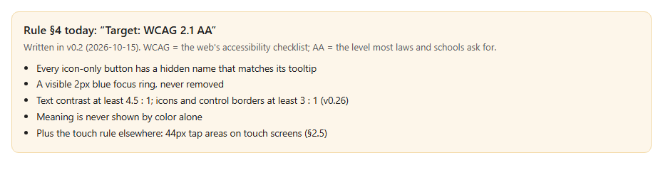
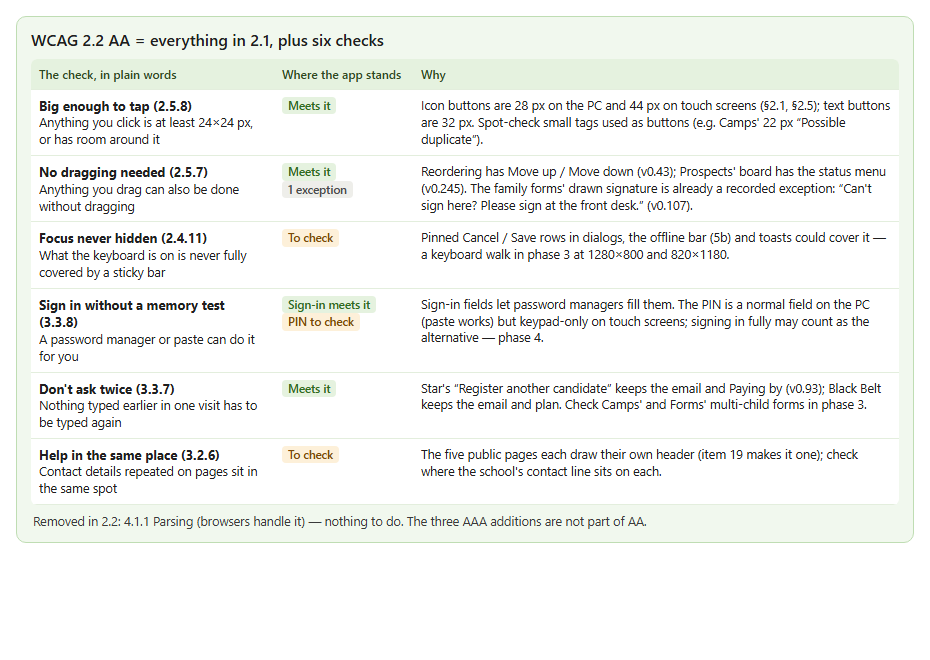

Unclear — two documents disagree. The rulebook (§4, since v0.2, 2026-10-15) targets WCAG 2.1 AA; the brief for this review asks for WCAG 2.2 AA. WCAG 2.2 is W3C's current version (a Recommendation since October 2023): it keeps everything in 2.1 and adds six checks at levels A and AA. I checked the app against them in the code; nothing in this item changes how the dashboard looks. (Code checked 2026-10-23, after merging main)

